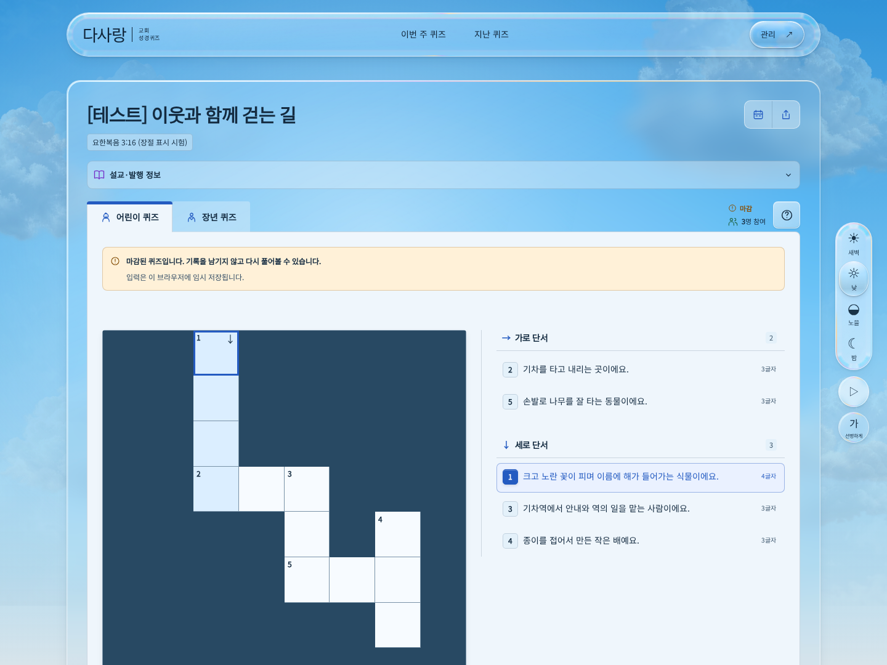
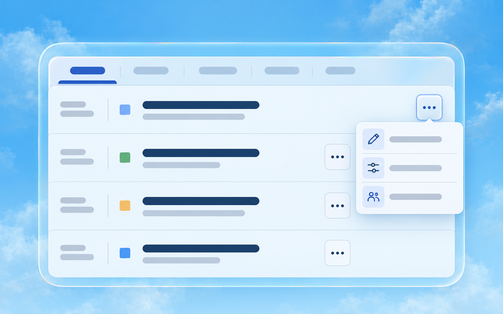

헤더 = 본문, 설정 패널은 그 바깥
가운데의 큰 창은 본문 영역(메인 콘텐츠), 시간대와 재생을 모은 우측 세로 바는 우측 설정 패널이라고 부르면 됩니다.
C안은 비교용입니다. 촬영 브라우저에서만 배치를 바꿨으며 실제 사이트의 헤더·본문·설정 패널은 그대로입니다. 아래 모바일 날짜 삭제와 Live 정렬만 실제 적용했습니다. 자료는 로컬 시연용입니다.
실제 화면으로 비교
A는 현재 배치, C는 헤더와 본문을 같은 폭으로 가운데 정렬하고 설정 패널을 오른쪽 24px 바깥에 놓은 제안입니다. 화면을 줄일 때 본문과 헤더는 좌우 대칭으로 줄어듭니다. 오른쪽만 잘라내지 않습니다.

사진을 누르면 원래 해상도로 열립니다. 현재 창에 맞춰 축소된 사진은 기기 화면 배율을 재현하는 것이 아닙니다. A/C는 같은 CSS 너비·같은 자료를 촬영했습니다. 브라우저 스크롤바·그림자는 정렬 기준선에서 제외합니다.
| 화면 너비 | 헤더 | 본문 | 패널 간격 | 가로 넘침 |
|---|
| 3440px | 1376px | 1376px | 24px | 0px |
|---|
| 2560px | 1376px | 1376px | 24px | 0px |
|---|
| 1440px | 1224px | 1224px | 24px | 0px |
|---|
| 1024px | 808px | 808px | 24px | 0px |
|---|
| 768px | 552px | 552px | 24px | 0px |
|---|
판단: 3440·2560·1440px에서는 본문을 가운데 유지하면서 설정 패널도 가까이 둘 수 있습니다. 1024px에서는 본문 808px, 768px에서는 552px가 됩니다. 이 두 사진은 옆 패널을 계속 유지했을 때의 비용을 보여줍니다.
추천: 1024px 이하에서는 설정 패널을 기존 하단 팝업으로 옮기면 본문 공간을 더 확보할 수 있습니다. 현재 실제 전환 기준은 700px 이하입니다. 이 기준 확대는 아직 적용하지 않았습니다.
기존 320~3440px 검사에서 가로 넘침은 없었습니다. 이번 C안 촬영 9개 화면에서도 0px입니다. 예를 들어 1440 CSS픽셀 화면을 배율 1.25에서 캡처하면 이미지가 1800 물리픽셀이 될 수 있습니다. 사진 크기만으로 웹페이지가 잘린다고 판단할 수는 없습니다. 이전 측정과 공식 설명 · 이번 측정 원본
모바일에 실제 적용한 두 곳
지난 퀴즈의 첫 줄에는 주차와 월별 주제만 남겼습니다. Live는 제목과 공개 화면 버튼을 같은 행에 놓고, 긴 제목은 말줄임표로 표시합니다. 데스크톱 배치는 유지했습니다.
모바일 퀴즈 목록 제안
생성 시안 · 제품 미적용
날짜·상태·제목 옆에는 작은 더보기(···) 버튼 하나만 둡니다. 누르면 그 퀴즈에 맞는 초안 편집 또는 퀴즈 설정·참여 기록을 이름과 아이콘으로 고를 수 있게 합니다. 참여 인원도 펼친 영역에 모으면 제목을 위한 공간을 확보할 수 있습니다.
현재처럼 버튼들이 다음 줄을 차지하지 않아 행이 얇아집니다. 대신 각 기능을 열 때 한 번 더 눌러야 합니다. 데스크톱은 기존 바로 가기들을 유지하는 방향을 권합니다.

imagegen-frontend-web · 목록 구역만 그린 가로 시안 1장. 문자 대신 선을 사용했습니다. 실제 데이터나 작동 화면이 아닙니다.